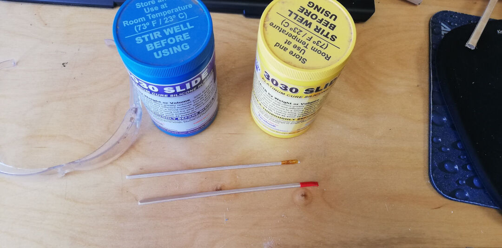
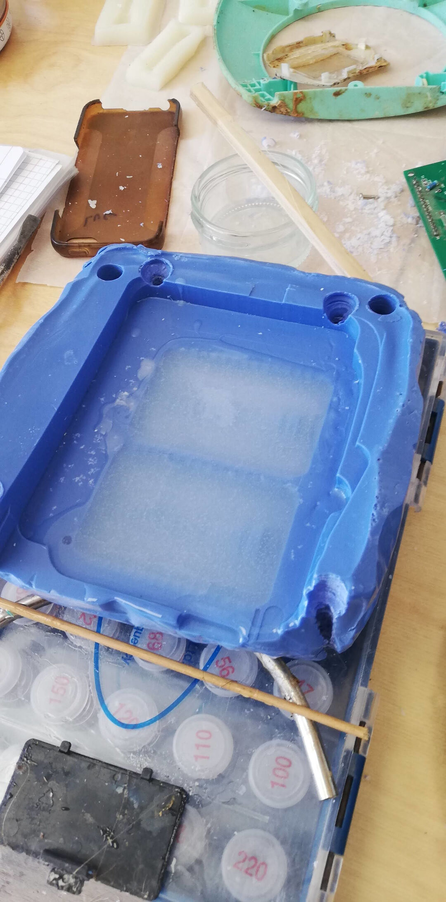

Molding and Casting
Group assignment
- Review the safety data sheets for each of your molding and casting materials, then make and compare test casts with each of them
Individual assignment
- Design a 3D mold around the stock and tooling that you'll be using, machine it, and use it to cast parts.
Learning outcomes:
- Design appropriate objects within the limitations of 3 axis machining.
- Demonstrate workflow used in mold design, construction and casting.
Have you:
- Explained how you designed your 3D mold and created your rough and finish toolpaths for machining.
- Shown how you made your mold and cast the parts.
- Described problems and how you fixed them.
- Included your design files and 'hero shot' photos of the mold and the final object.
Tools used
- cnc
Software Used
- Solidworks
- Mach3
Files
Group Assignment
Go to group assignment page

Designing
I will be describing the workflow necessary to create a positive in wax, a negative mold in Silicone and finally the casting process of the final positive, for that reason we start creating an assembly with the model already done using a simple revolve feature.
- With a new assembly opened click in Insert components;
- Again :-) Click on the second insert components;

Confirm the insertion clicking on the green checkmark.
Now we need to create the negative mold!
- Click on the front plane, making sure that this plane is in the exact middle of the part.
- Click on New part.
With the new part opened click on the front plane again and the on sketch.
I then created a square around the part making sure to leave 10mm around the part so there is silicone structuring the mold.
Now the magic! Imagine if we had to create all those negative features. No way Jose! We are going to create a negative with the cavity feature.
- Click insert;
- Click then features in the opened menu;
- Find Cavity and Click on it.

Now simply select the model and confirm.
Thats it! The first part is done! Lets call it mold A, shall we?
I exploded the parts for your entertainment, how nice of me! :-)

Now because I am very lazy I will make a copy of the mold A in other to create Mold B
- Click in Save as copy and open, the reason we chose this option is that the first one will really just rename the part, but we actually want to have a opened copy;
- Name the part, in my case Mold_b
- And save.
Now we are going to insert the copied part, like before click in insert part again and again... and confirm.
Now we need to mate the parts., Oh I forgot to mention that after copying the part if so desired you should create some features in order to keep the mold from moving and minimize the parting line.
- Do that by clicking on the face
- and the clicking on the second face of mold A so later they will mate there.
- Now click on coincident and confirm.

The part is not yet completely mated but its getting there.
Repeat this in the opposite corner and we are done mating.

Now with the same procedure as before, click on the corner of the part.

Again exploded for you! In case you are wondering how I got the features negative in the mold b , just review the first cavity, its done the same way.

Finally I calculate the volume of the part. This will be useful when casting so so I waste the minimum amount of silicone when casting the part. About 5ml of silicone I guess. But I will actually prepare twice that as I have some plans for the leftover. Ah in case you noticed the Positive part is different than the one I used initially its because I decided to reduce its size as it was too big for the machinable wax I created in the wildcard week.

Milling
I started Milling by fitting the stock over a cardboard box so I would waste as little wax as possible. Recycle is in my mind! I drilled clearance holes and attached everything in the sacrificial bed of my large CNC.

The process to start the CNC is the same presented in the input devices week, except there is no auto calibration or finding the 0 automatically, so in case you forgot: Start Mach3 using the arrows move the cnc to the desired location you want the origin to be, than clicking on each axis ) X, Y and Z.
The video Shows the CNC doing its initial moves clearing the first steps with a 1/4" mill bit.
Here we can see more the process with the smaller 1.5mm mill bit which was the last bit I used.
The final result of the positive mold is really nice, its smooth and the details are satisfying.
Casting the Negative Mold
We started by reading the datasheet aloud! My dear colleague and daughter Bianca did the honors. :-)
Here you can see the 3030 Slide I used initially.
We marked each bamboo stick with a different color tape, with glasses on and gloves we started the process.

A lot of stirring is necessary but this product has a long shelf life, 45 minutes before start curing so no hurry here. Its important to mix well each component and then the mix.
With a one to one ratio we had 43 grams of silicone to make our negative mold.
Here you can see the pouring, how satisfying!
The results were not good! After waiting more than 48 hours the mold was still sticky. I believe there is something wrong with my silicone, its been 2 years since I bought it, so that might be it.

The second problem was the features I created to prevent the mold from moving they would not fit well against each other so I decided to fill it up with regular paraffin and smooth it with a blade, the results were decent.

Here is the positive mold with the features manually filled with paraffin, ready for casting again.
Here you can see the new cast with this Silicone I had in the lab. It is from a Chinese company called OTT the model # of the silicone is OTT-1817, I couldn't find its datasheet as I believe its a product no longer been made. Tried even emailing the company but no return from them.
The process was the same, from ratio to stirring the difference is that this product cures in 30-40 minutes so one needs to be fast. :-)

The results were really satisfying!

Casting the Part
As I am doing Silicone on Silicone casting, I need to prepare a release agent.
On the Smoth-On website There are 3 possibilities presented. One is proprietary, the other are easy to DIY.

As always I will go DIY and make a a mixture of 2 parts isopropyl alcohol and 1 part dish soap, I have no idea it will work or it will ruin the mold.
Because there are no instructions on the DIY solution I assume they are the same as in the proprietary option.

So with the solution in hand I apply to the mold and let it dry in the sun.


With the mold ready I cut 2 pieces of thin plywood. This will help structure the mold to have an even pressure and prevent that the mold licks.
I then clamp it down hole up

I will need a hole to let the air out as the silicone enters, as I haven't thought of that in the design phase I cut a bit of the silicone to enlarge hole.

Having already prepared the silicone like before I use the syringe to introduce the silicone into the mold.

Now I wait for the silicone to cure just like before, and then go to inspect the part.
Voila, its done

Its so Flexible!

And so strong!

I cant forget to mention that the leftover of the silicone was not wasted. I made a simple cast with the measuring cup and my attiny44 board from Input Devices.